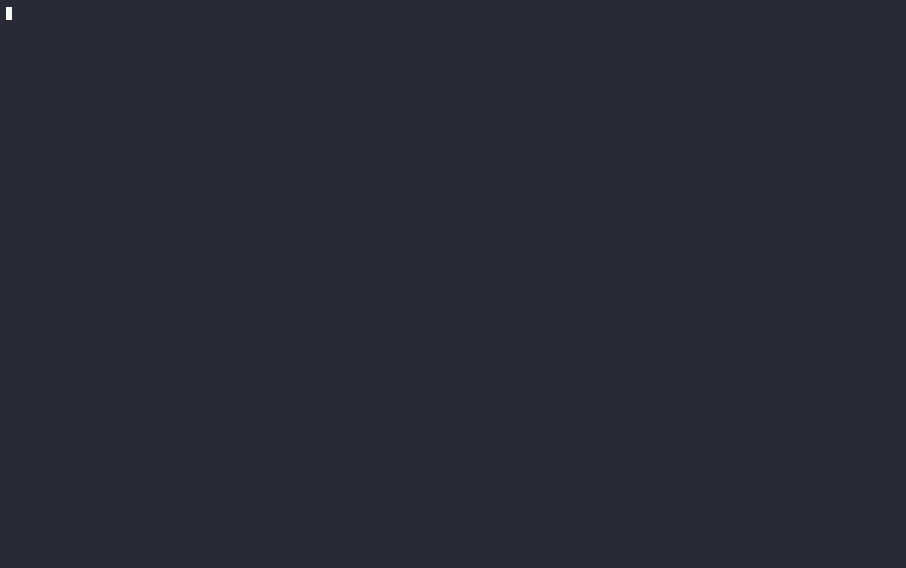

Open source · Apache-2.0 · Go
An OpenAI-compatible LLM router that picks the cheapest model likely to answer a prompt well — built to run in production, not as a research demo.
"Building a model router that admits what it doesn't know."

auto
resolves to fast/smart/genius via
the real router, and autoroute_route_decisions_total confirms
which layer decided each one.
Why
Model routing itself is a solved pitch — RouteLLM, Not Diamond, Martian, Arch-Router, vLLM Semantic Router all do a version of it. What's missing from most open-source options is the boring production layer: health checks, circuit breakers, graceful degradation, first-class metrics, a Helm chart, and an eval harness that publishes numbers instead of picking the ones that flatter it. That's what AutoRoute is.
How it works
L1 heuristics (tokens, code fences, task verbs, turns, tools, JSON) decide with certainty when they can — no embedding call needed. A miss falls through to L2, an in-process ONNX embedding classifier; confidence against the nearest route decides the tier, or falls to the conservative default when unsure. Every outgoing call passes through a per-provider circuit breaker and a fallback chain that only ever climbs toward more capable tiers, never down to something cheaper.
autoroute_route_decisions_total{tier,layer}. Full diagrams,
worked examples and failure-mode traces (a provider 503, the
shadow-quality check) are in the
architecture doc
and its rendered version.
The honest numbers
eval/ replays RouterBench
(36,497 real prompts, 86 benchmark categories, 11 pre-scored models) through
the exact same RouteL1 → RouteL2 path production
uses — not a reimplementation that could drift. Held-out split, 4,436 rows
the thresholds were never tuned against:
Why that last number, not a rosier one: RouterBench is academic-exam-style
prompts (MMLU, GSM8K, Winogrande); the L1 rules and L2 exemplars were authored
for general assistant chat. They don't confidently discriminate this benchmark's
traffic, so the router does exactly what it's designed to do when uncertain —
falls to the conservative default and pays the frontier price. eval/RESULTS.md
says this plainly, and .github/workflows/eval.yml re-runs the
comparison weekly as a regression gate against the committed baseline.
Full numbers, the train split, and the reasoning: eval/RESULTS.md · the build story behind each milestone: docs/BLOG.md.
Built for production
Per-provider circuit breaker, fallback chain that only climbs toward more capable tiers, and degrade-to-passthrough — never a hard 5xx.
Prometheus metrics for every decision, fallback, and breaker trip; a provisioned Grafana dashboard covering the full request path.
Samples cheap-tier responses, replays them against the frontier model off the critical path, and alerts on silent quality loss — the failure mode that trips no other alarm.
A minimal Helm chart, Kubernetes probes, a CGO-free build mode with no ONNX dependency, and a docker-compose demo stack.
A CI job replays RouterBench weekly and fails on drift from the committed baseline — a real regression is a human decision, never a silent auto-commit.
Drop-in /v1/chat/completions, streaming and non-streaming, same request/response schema — point an existing client at it.
Milestones
| Milestone | Branch | Shipped |
|---|---|---|
| M0 | m0-spike | ✓ in-process ONNX embedding + nearest-centroid router |
| M1 | m1-proxy-skeleton | ✓ OpenAI-compatible proxy: forward, stream, health, metrics, Docker |
| M2 | m2-layered-router | ✓ L1 heuristics + L2 embedding + confidence bands, decision log, degrade-to-passthrough |
| M3 | m3-reliability-observability | ✓ breakers, fallback chain, full metrics, Grafana, Helm |
| M4 | m4-eval-harness | ✓ RouterBench replay, published numbers, break-even |
| M5 | m5-shadow-detector | ✓ shadow sampling + quality-delta metric + alert |
| M6 | m6-flagship-polish | ✓ README, blog draft, demo GIF |